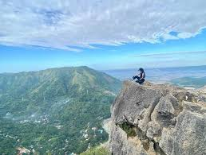

Home to Wawa Dam and legendary mountains.
Montalban, also known as Rodriguez, Rizal, is a haven for nature lovers. It is famous for its scenic Wawa Dam, limestone formations, and challenging hiking trails like Mt. Pamitinan and Mt. Binacayan.
